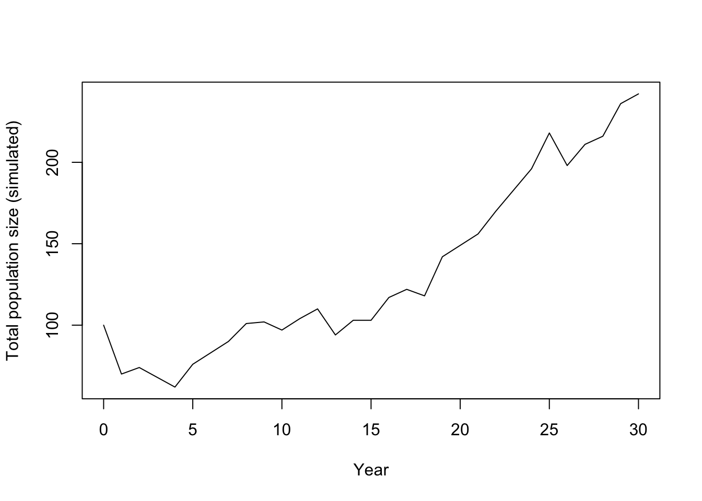

15 Matrix Population Models (MPMs): Projection and Simulation
This short tutorial introduces matrix population models (MPMs) and shows two closely related uses:
- Projection: how a population vector is projected forward through time using a matrix.
- Simulation: how the same structure can be used to explore scenarios (e.g. culling) and quantify uncertainty.
The examples use a simple 3-stage life cycle. The goal is to be clear about:
- the projection interval (time step, \(\Delta t\)),
- how survival/transition and reproduction appear in the matrix,
- how to project a population vector \(\mathbf{n}_t\),
- how to convert the deterministic model into a basic stochastic simulation.
15.1 What is a matrix population model?
An MPM describes how a structured population changes over discrete time steps.
15.2 The projection interval (\(\Delta t\))
MPMs are defined for a particular projection interval \(\Delta t\) (the time step between updates). Common choices are:
- \(\Delta t = 1\) year (very common in ecology)
- \(\Delta t = 1\) month (or other shorter steps)
Key rule: the vital rates you put in the matrix must match the chosen \(\Delta t\).
- If \(\Delta t\) is one year, use annual survival and annual fertility/recruitment.
- If \(\Delta t\) is one month, use monthly survival and monthly recruitment.
A common mistake is mixing time scales (e.g. monthly survival with yearly reproduction).
15.3 The population vector
Let \(\mathbf{n}_t\) be a vector of abundances at time \(t\) (measured in units of \(\Delta t\)):
\[ \mathbf{n}_t = \begin{bmatrix} n_{1,t} \\ n_{2,t} \\ \vdots \\ n_{k,t} \end{bmatrix} \]
Each element is the number (or density) in a class (age/stage/size/etc.).
15.4 The projection matrix
Let \(\mathbf{A}\) be a square matrix of vital rates. The basic model is:
\[ \mathbf{n}_{t+\Delta t} = \mathbf{A}\,\mathbf{n}_t \]
Interpretation of entries:
- Survival / transition: individuals moving between classes (including remaining in the same class)
- Reproduction: production of new individuals (often into the first class)
15.5 A simple 3-stage model
We will use three stages:
- Juvenile (J)
- Subadult (S)
- Adult (A)
The life-cycle assumptions (per \(\Delta t = 1\) year) are:
- Adults produce juveniles: \(F_A\) juveniles per adult per year (recruits to J).
- Juveniles that survive and grow move to Subadult with probability \(G_J\).
- Subadults either:
- survive and remain subadult with probability \(P_S\), or
- survive and grow to adult with probability \(G_S\).
- Adults survive and remain adult with probability \(P_A\).
A common stage-structured (Lefkovitch) matrix is:
\[ \mathbf{A} = \begin{bmatrix} 0 & 0 & F_A \\ G_J & P_S & 0 \\ 0 & G_S & P_A \end{bmatrix} \]
15.7 Define vital rates and build \(\mathbf{A}\)
# Vital rates for a 1-year projection interval
F_A <- 1.2 # recruits (juveniles) per adult per year
G_J <- 0.35 # juvenile -> subadult (survive + grow)
P_S <- 0.55 # subadult -> subadult (survive + stay)
G_S <- 0.25 # subadult -> adult (survive + grow)
P_A <- 0.80 # adult -> adult (survive + stay)
# Build the projection matrix (rows = stage at t+1, cols = stage at t)
A <- matrix(
c(0, 0, F_A,
G_J, P_S, 0,
0, G_S, P_A),
nrow = 3, byrow = TRUE
)
dimnames(A) <- list(
c("Juvenile", "Subadult", "Adult"),
c("Juvenile", "Subadult", "Adult")
)
# Print matrix so we can check entries
A## Juvenile Subadult Adult
## Juvenile 0.00 0.00 1.2
## Subadult 0.35 0.55 0.0
## Adult 0.00 0.25 0.815.9 One-step projection
## [,1]
## Juvenile 24.0
## Subadult 34.0
## Adult 23.5Given the stage abundances at time \(t\), multiplying by \(\mathbf{A}\) gives the expected abundances at time \(t+1\) (because \(\Delta t=1\) year here).
15.10 Project for many years (deterministic)
# Number of projection steps
years <- 30
# Matrix to store yearly stage abundances
nmat <- matrix(NA_real_, nrow = years + 1, ncol = length(n0))
colnames(nmat) <- names(n0)
# Set initial year
nmat[1, ] <- n0
# Project forward one year at a time
for (t in 1:years) {
nmat[t + 1, ] <- as.numeric(A %*% nmat[t, ])
}
head(nmat, 6)## Juvenile Subadult Adult
## [1,] 50.0000 30.00000 20.00000
## [2,] 24.0000 34.00000 23.50000
## [3,] 28.2000 27.10000 27.30000
## [4,] 32.7600 24.77500 28.61500
## [5,] 34.3380 25.09225 29.08575
## [6,] 34.9029 25.81904 29.5416615.10.1 Plot totals and stage trajectories
# Total abundance each year
totalN <- rowSums(nmat)
# Plot total abundance
plot(
0:years, totalN, type = "l",
xlab = "Year", ylab = "Total population size"
)
# Plot stage-specific abundances
matplot(
0:years, nmat, type = "l", lty = 1,
xlab = "Year", ylab = "Abundance"
)
legend("topleft", legend = colnames(nmat), lty = 1, bty = "n")
15.11 Long-term growth rate (\(\lambda\))
For a constant matrix \(\mathbf{A}\), the asymptotic growth rate is the dominant eigenvalue \(\lambda\).
# Eigenvalues of the projection matrix
eig <- eigen(A)
# Dominant eigenvalue is asymptotic growth rate lambda
lambda <- Re(eig$values[which.max(Re(eig$values))])
lambda## [1] 1.01942- If \(\lambda > 1\): growth (on average) per time step
- If \(\lambda = 1\): stationary
- If \(\lambda < 1\): decline
15.12 Simulation: adding stochasticity and management actions
Deterministic projection treats the model output as exact expectations. In reality:
- births and deaths vary (demographic stochasticity),
- vital rates vary across years (environmental stochasticity),
- management can intervene (culling, supplementation, etc.).
Below is a transparent stochastic simulation that:
- simulates reproduction with Poisson variation,
- simulates survival/transitions with binomial variation,
- allows a simple culling intervention.
15.12.1 One simulated trajectory (no culling)
Here we write the simulation as a sequence of explicit steps.
- Create an output matrix (
sim1) with one row per year and one column per stage. - Fill row 1 with the initial stage abundances (
n0). - For each year, read the current stage counts (
J,S,A). - Draw the number of births and transitions using random distributions:
- births from adults: Poisson
- survival/transition events: Binomial
- Write the resulting stage counts into the next row.
- After the loop, plot total abundance through time.
# Step 1: create a matrix to store the trajectory
sim1 <- matrix(0L, nrow = years + 1, ncol = 3)
colnames(sim1) <- c("Juvenile", "Subadult", "Adult")
# Step 2: set the initial population (year 0)
sim1[1, ] <- as.integer(n0[c("Juvenile", "Subadult", "Adult")])
# Step 3-5: update the population one year at a time
for (t in 1:years) {
# Current stage abundances at year t
J <- sim1[t, "Juvenile"]
S <- sim1[t, "Subadult"]
A <- sim1[t, "Adult"]
# Births: each adult contributes recruits stochastically
newJ <- rpois(1, lambda = F_A * A)
# Juvenile -> Subadult transition
J_to_S <- rbinom(1, size = J, prob = G_J)
# Subadult transitions: stay subadult or move to adult
S_stay <- rbinom(1, size = S, prob = P_S)
S_remaining <- S - S_stay
p_grow_cond <- if ((1 - P_S) > 0) G_S / (1 - P_S) else 0
S_to_A <- rbinom(1, size = S_remaining, prob = p_grow_cond)
# Adult survival
A_surv <- rbinom(1, size = A, prob = P_A)
# Write next year's abundances
sim1[t + 1, "Juvenile"] <- newJ
sim1[t + 1, "Subadult"] <- J_to_S + S_stay
sim1[t + 1, "Adult"] <- S_to_A + A_surv
}
# Step 6: plot the total population trajectory
plot(0:years, rowSums(sim1), type = "l",
xlab = "Year", ylab = "Total population size (simulated)")
Just after running the simulation, we can calculate the realised lambda for this no-culling trajectory.
tot_no <- rowSums(sim1)
realised_lambda_no <- if (length(tot_no) < 2 || tot_no[1] <= 0) {
NA_real_
} else if (any(tot_no <= 0)) {
0
} else {
exp(mean(diff(log(tot_no))))
}
realised_lambda_no## [1] 1.02989715.12.2 Add a culling intervention
Example: remove 5 adults per year starting at year 10. This section uses the same simulation rules as before, but adds a management step at the start of each year.
What happens:
- Scenario A (no culling) was simulated in the previous section and stored as
sim1. - We set intervention controls (
cull_enabled,cull_stage,cull_start_year,cull_n) for Scenario B. - At each year
t, we first read current stage abundances (J,S,A). - If culling is active and
tis at/after the start year, we remove individuals from the target stage. - We then refresh
J,S,Aso births and survival are based on the post-cull population. - After that, demographic updates are exactly the same as in Scenario A.
- Finally, we compare Scenario A and B in one figure and compute realised growth rates.
# Management settings for the intervention scenario
cull_enabled <- TRUE
cull_stage <- "Adult"
cull_start_year <- 10
cull_n <- 5
# Storage for the culling trajectory
sim_cull <- matrix(0L, nrow = years + 1, ncol = 3)
colnames(sim_cull) <- c("Juvenile", "Subadult", "Adult")
sim_cull[1, ] <- as.integer(n0[c("Juvenile", "Subadult", "Adult")])
# Simulate year by year, applying culling before demographic updates
for (t in 1:years) {
# Current stage abundances at year t
J <- sim_cull[t, "Juvenile"]
S <- sim_cull[t, "Subadult"]
A <- sim_cull[t, "Adult"]
# Apply culling before births/survival if intervention is active
if (cull_enabled && t >= cull_start_year) {
# Never remove more individuals than are currently present
remove_n <- min(sim_cull[t, cull_stage], as.integer(cull_n))
sim_cull[t, cull_stage] <- sim_cull[t, cull_stage] - remove_n
# Refresh stage counts after culling
J <- sim_cull[t, "Juvenile"]
S <- sim_cull[t, "Subadult"]
A <- sim_cull[t, "Adult"]
}
# Demographic updates (same as the no-culling simulation)
newJ <- rpois(1, lambda = F_A * A)
J_to_S <- rbinom(1, size = J, prob = G_J)
S_stay <- rbinom(1, size = S, prob = P_S)
S_remaining <- S - S_stay
p_grow_cond <- if ((1 - P_S) > 0) G_S / (1 - P_S) else 0
S_to_A <- rbinom(1, size = S_remaining, prob = p_grow_cond)
A_surv <- rbinom(1, size = A, prob = P_A)
sim_cull[t + 1, "Juvenile"] <- newJ
sim_cull[t + 1, "Subadult"] <- J_to_S + S_stay
sim_cull[t + 1, "Adult"] <- S_to_A + A_surv
}
# Compare trajectories: solid = no culling, dashed = culling
plot(0:years, rowSums(sim1), type = "l",
xlab = "Year", ylab = "Total population size",
ylim = range(c(rowSums(sim1), rowSums(sim_cull))))
lines(0:years, rowSums(sim_cull), lty = 2)
legend("topleft", legend = c("No culling", "Culling: 5 adults/year from year 10"),
lty = c(1, 2), bty = "n")
For this single-run summary, realised lambda is the geometric mean of year-to-year total-population growth factors. This is a finite-horizon, trajectory-specific estimate; in many ecology texts, the long-run stochastic growth rate is denoted \(\lambda_s\) (or \(\log \lambda_s\)), which is related but not identical to a single-run realised value.
Interpretation:
lambda > 1: realised growth over the simulated period0 < lambda < 1: realised declinelambda = 0: extinction occurred at some point in the simulated periodlambdashould not be negative in this setting
# Realised lambda from each simulated trajectory
tot_no <- rowSums(sim1)
tot_cu <- rowSums(sim_cull)
# Geometric-mean per-step growth rate over the full horizon.
# If a trajectory hits zero, define realised lambda as 0 (extinction within horizon).
realised_lambda_no <- if (length(tot_no) < 2 || tot_no[1] <= 0) {
NA_real_
} else if (any(tot_no <= 0)) {
0
} else {
exp(mean(diff(log(tot_no))))
}
realised_lambda_cu <- if (length(tot_cu) < 2 || tot_cu[1] <= 0) {
NA_real_
} else if (any(tot_cu <= 0)) {
0
} else {
exp(mean(diff(log(tot_cu))))
}
data.frame(
scenario = c("No culling", "Culling"),
realised_lambda = c(realised_lambda_no, realised_lambda_cu)
)## scenario realised_lambda
## 1 No culling 1.029897
## 2 Culling 0.00000015.12.3 Many replicates (uncertainty bands)
A single run is one possible realisation. We typically run many replicates and summarise. In this script, we run two sets of replicates (no culling vs culling), then compute median and 10-90% intervals for each year. Note: different studies may use different interval widths (for example, 95% intervals) depending on purpose and reporting conventions. To keep the comparison clear, the code is structured as: 1. Scenario A: run all replicates with no culling. 2. Scenario B: run all replicates with culling. 3. Compare Scenario A and B in one graph.
# Number of Monte Carlo replicates
nreps <- 200
# Store total abundance per year for each replicate
totals_no <- matrix(NA_real_, nrow = years + 1, ncol = nreps)
totals_cull <- matrix(NA_real_, nrow = years + 1, ncol = nreps)
# Scenario A: run all replicates with no culling
for (rep in 1:nreps) {
out_no <- matrix(0L, nrow = years + 1, ncol = 3)
colnames(out_no) <- c("Juvenile", "Subadult", "Adult")
out_no[1, ] <- as.integer(n0[c("Juvenile", "Subadult", "Adult")])
for (t in 1:years) {
J <- out_no[t, "Juvenile"]
S <- out_no[t, "Subadult"]
A <- out_no[t, "Adult"]
newJ <- rpois(1, lambda = F_A * A)
J_to_S <- rbinom(1, size = J, prob = G_J)
S_stay <- rbinom(1, size = S, prob = P_S)
S_remaining <- S - S_stay
p_grow_cond <- if ((1 - P_S) > 0) G_S / (1 - P_S) else 0
S_to_A <- rbinom(1, size = S_remaining, prob = p_grow_cond)
A_surv <- rbinom(1, size = A, prob = P_A)
out_no[t + 1, "Juvenile"] <- newJ
out_no[t + 1, "Subadult"] <- J_to_S + S_stay
out_no[t + 1, "Adult"] <- S_to_A + A_surv
}
totals_no[, rep] <- rowSums(out_no)
}
# Scenario B: run all replicates with culling
for (rep in 1:nreps) {
out_cu <- matrix(0L, nrow = years + 1, ncol = 3)
colnames(out_cu) <- c("Juvenile", "Subadult", "Adult")
out_cu[1, ] <- as.integer(n0[c("Juvenile", "Subadult", "Adult")])
for (t in 1:years) {
J <- out_cu[t, "Juvenile"]
S <- out_cu[t, "Subadult"]
A <- out_cu[t, "Adult"]
if (cull_enabled && t >= cull_start_year) {
remove_n <- min(out_cu[t, cull_stage], as.integer(cull_n))
out_cu[t, cull_stage] <- out_cu[t, cull_stage] - remove_n
J <- out_cu[t, "Juvenile"]
S <- out_cu[t, "Subadult"]
A <- out_cu[t, "Adult"]
}
newJ <- rpois(1, lambda = F_A * A)
J_to_S <- rbinom(1, size = J, prob = G_J)
S_stay <- rbinom(1, size = S, prob = P_S)
S_remaining <- S - S_stay
p_grow_cond <- if ((1 - P_S) > 0) G_S / (1 - P_S) else 0
S_to_A <- rbinom(1, size = S_remaining, prob = p_grow_cond)
A_surv <- rbinom(1, size = A, prob = P_A)
out_cu[t + 1, "Juvenile"] <- newJ
out_cu[t + 1, "Subadult"] <- J_to_S + S_stay
out_cu[t + 1, "Adult"] <- S_to_A + A_surv
}
totals_cull[, rep] <- rowSums(out_cu)
}
# Summarise each year across replicates (median and 10-90% interval)
sum_no <- data.frame(
year = 0:years,
median = apply(totals_no, 1, median),
lo = apply(totals_no, 1, quantile, probs = 0.1),
hi = apply(totals_no, 1, quantile, probs = 0.9)
)
sum_cu <- data.frame(
year = 0:years,
median = apply(totals_cull, 1, median),
lo = apply(totals_cull, 1, quantile, probs = 0.1),
hi = apply(totals_cull, 1, quantile, probs = 0.9)
)
# Scenario A vs Scenario B: compare summaries in one figure
plot(sum_no$year, sum_no$median, type = "n",
xlab = "Year", ylab = "Total population size",
ylim = range(c(sum_no$lo, sum_no$hi, sum_cu$lo, sum_cu$hi)))
# Ribbon for no-culling uncertainty (10-90%)
polygon(
x = c(sum_no$year, rev(sum_no$year)),
y = c(sum_no$lo, rev(sum_no$hi)),
col = grDevices::adjustcolor("steelblue", alpha.f = 0.25),
border = NA
)
# Ribbon for culling uncertainty (10-90%)
polygon(
x = c(sum_cu$year, rev(sum_cu$year)),
y = c(sum_cu$lo, rev(sum_cu$hi)),
col = grDevices::adjustcolor("firebrick", alpha.f = 0.25),
border = NA
)
# Median trajectories on top of ribbons
lines(sum_no$year, sum_no$median, lwd = 2, col = "steelblue4")
lines(sum_cu$year, sum_cu$median, lwd = 2, lty = 2, col = "firebrick4")
legend("topleft",
legend = c("No culling (median)", "No culling (10-90%)",
"Culling (median)", "Culling (10-90%)"),
lty = c(1, NA, 2, NA),
lwd = c(2, NA, 2, NA),
pch = c(NA, 15, NA, 15),
col = c("steelblue4", grDevices::adjustcolor("steelblue", alpha.f = 0.5),
"firebrick4", grDevices::adjustcolor("firebrick", alpha.f = 0.5)),
pt.cex = c(1, 1.5, 1, 1.5),
bty = "n")
15.13 Student exercises (for a class handout)
15.13.1 Exercise: Projection interval sanity check
- In the tutorial, \(\Delta t = 1\) year. Write one sentence explaining what that means.
- Suppose you wanted \(\Delta t = 1\) month. What changes would you need to make to the interpretation of:
- \(P_A\)?
- \(F_A\)?
- Name one real reason you might prefer monthly time steps over yearly ones.
15.13.2 Exercise: Change one vital rate and re-run projections
- Reduce adult survival from \(P_A = 0.80\) to \(P_A = 0.70\). Recompute:
- the deterministic projection plot,
- \(\lambda\).
- Does the population grow or decline now? How can you tell?
15.13.3 Exercise: Culling as management
- In the simulation, cull 5 adults per year from year 10. Increase this to 10 adults per year.
- Compare the median population trajectory and the uncertainty bands.
- To identify which stage is most impactful, run the same culling intensity for each stage separately (juveniles, subadults, adults), then compare results. Which stage has the largest effect, and why?
15.13.4 Exercise: Contraception treatment (reduced fecundity)
Design a second management treatment where fecundity is reduced instead of removing individuals.
- Keep survival/transition rates unchanged, but reduce fecundity after year 10 with a 90% effective contraceptive treatment (for example, multiply
F_Aby 0.1 from year 10 onward). - Implement this as a time-dependent fecundity value inside the yearly loop (for example,
F_A_t), and useF_A_tin the births step. - Run replicate simulations for:
- baseline (no treatment),
- culling treatment,
- contraception treatment.
- Compare all three scenarios in one figure and discuss which treatment gives the largest reduction in population growth.
15.14 Notes and extensions
- If you include juvenile stasis (juveniles surviving but remaining juveniles), add a \(P_J\) term and include it in the matrix and simulation.
- The deterministic matrix model is most useful for structure and long-term behaviour (\(\lambda\), stable stage structure, elasticities).
- Stochastic simulations are most useful for short-term variability and scenario exploration (management, uncertainty, risk).